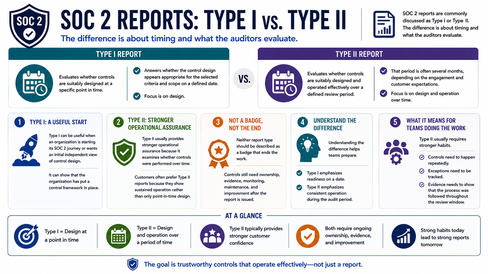

What Is SOC 2?
SOC 2 Type I and Type II
Connecting to LMS... Progress: in progress
Version 1.0 | Date: 2026-06-16 | Educational overview of SOC 2 concepts, controls, evidence, and trust.

Narration
SOC 2 reports are commonly discussed as Type I or Type II. The difference is about timing and what the auditors evaluate.
A Type I report evaluates whether controls are suitably designed at a specific point in time. It answers whether the control design appears appropriate for the selected criteria and scope on a defined date.
A Type II report evaluates whether controls are suitably designed and operated effectively over a defined review period. That period is often several months, depending on the engagement and customer expectations.
Type I can be useful when an organization is starting its SOC 2 journey or wants an initial independent view of control design. It can show that the organization has put a control framework in place.
Type II usually provides stronger operational assurance because it examines whether controls were performed over time. Customers often prefer Type II reports because they show sustained operation rather than only point-in-time design.
Neither report type should be described as a badge that ends the work. Controls still need ownership, evidence, monitoring, maintenance, and improvement after the report is issued.
Understanding the difference helps teams prepare. Type I emphasizes readiness on a date, while Type II emphasizes consistent operation during the audit period.
For teams doing the work, Type II usually requires stronger habits. Controls need to happen repeatedly, exceptions need to be tracked, and evidence needs to show that the process was followed throughout the review window.